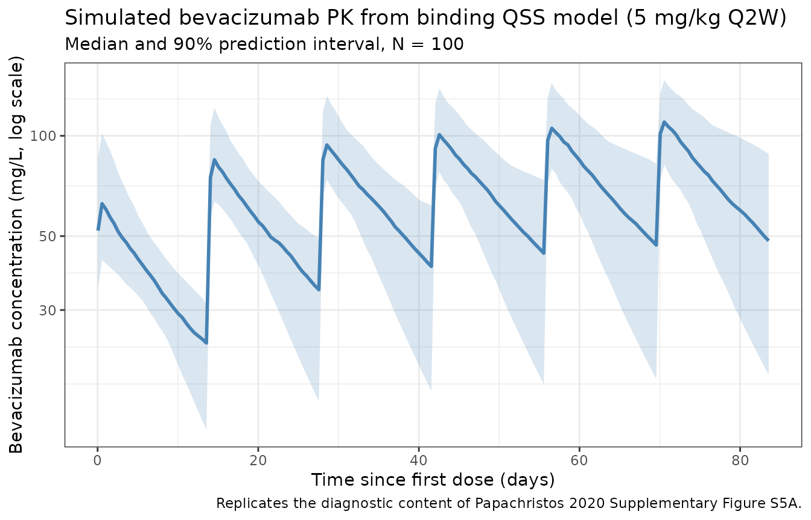
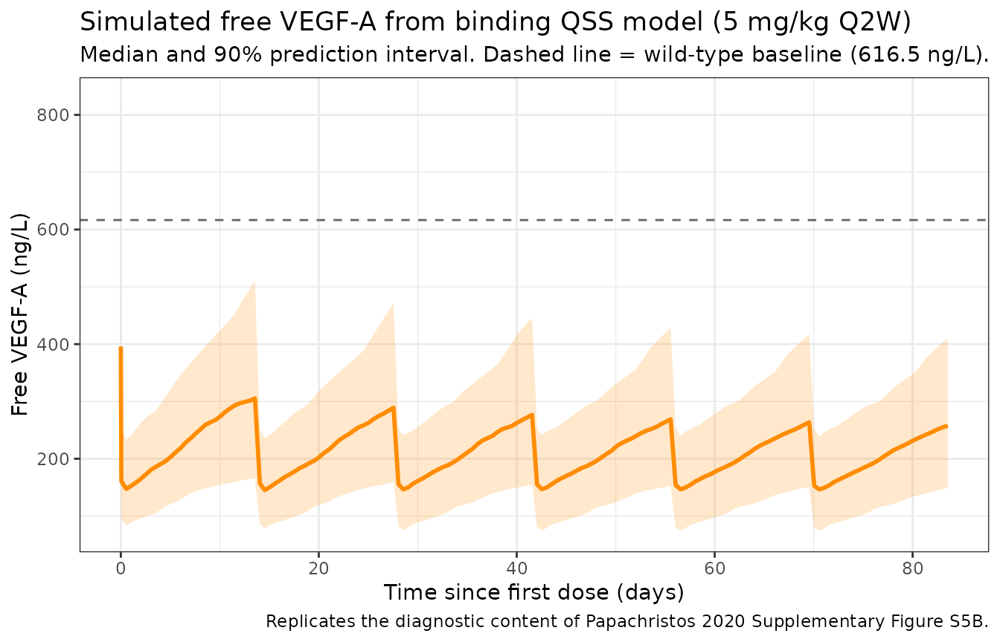
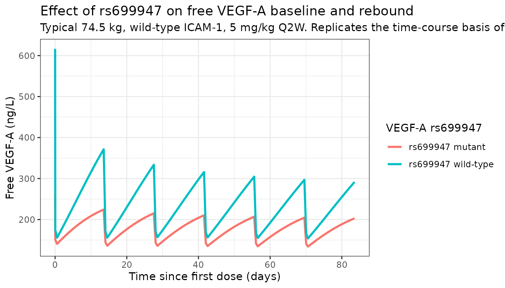

Bevacizumab qss (Papachristos 2020)
Source:vignettes/articles/Papachristos_2020_bevacizumab_qss.Rmd
Papachristos_2020_bevacizumab_qss.RmdModel and source
- Citation: Papachristos A, Karatza E, Kalofonos H, Karalis V. Pharmacogenetics in Model-Based Optimization of Bevacizumab Therapy for Metastatic Colorectal Cancer. Int J Mol Sci. 2020;21(11):3753. doi:[10.3390/ijms21113753](https://doi.org/10.3390/ijms21113753).
- Description: Two-compartment quasi-steady-state target-mediated drug disposition (TMDD QSS) model for IV bevacizumab and free VEGF-A in adults with metastatic colorectal cancer (mCRC), with allometric weight scaling and ICAM-1 / VEGF-A genotype covariate effects (Table 2 of Papachristos 2020).
- Modality: Therapeutic anti-VEGF-A monoclonal antibody (humanized IgG1, MW ≈ 149 kDa) bound to a soluble target (free VEGF-A, MW ≈ 45 kDa back-calculated from the paper’s BM0 dual-unit reporting).
This vignette validates the binding-QSS variant (Table 2).
Papachristos 2020 also reports a descriptive PK model (Table 1, packaged
as Papachristos_2020_bevacizumab_pk) and a PK/PD
immediate-response Imax model (Table 3, packaged as
Papachristos_2020_bevacizumab_pkpd).
TODO (co-equality framing). The three Papachristos 2020 models are CO-EQUAL final models, not a hierarchical base / extended pair. Each pursues a different objective: descriptive PK, mechanistic target binding (this vignette), or drug-effect characterization (PK/PD). Reviewer please confirm this framing and the choice to package all three.
Population
The Papachristos 2020 cohort comprised 46 adult patients with histologically confirmed metastatic colorectal cancer (ECOG 0-2) treated at a single Greek centre. Baseline demographics (paper section 2.1):
- Sex: 61% male, 39% female.
- Median (IQR) weight 74.5 kg (64.15-81.75); median (IQR) age 63 years (53-72).
- Race / ethnicity: Greek; not formally tabulated.
- Dosing: 5 mg/kg IV every 2 weeks (76% of patients) or 7.5 mg/kg IV every 3 weeks (24%).
- Sample sizes: 156 bevacizumab + 169 free VEGF-A serum concentrations.
Two SNPs entered the final binding QSS model:
ICAM-1 rs1799969 (effect on CL) and
VEGF-A rs699947 (effects on K_ss and BM0).
The same metadata is available programmatically via
readModelDb("Papachristos_2020_bevacizumab_qss")$population.
Source trace
| Parameter (model name) | Value | Source |
|---|---|---|
lcl (CL, L/day) |
log(0.344) | Papachristos 2020 Table 2, CL |
lvc (V1pop, L) |
log(5.83) | Papachristos 2020 Table 2, V1pop |
lq (Qpop, L/day) |
log(0.136) | Papachristos 2020 Table 2, Qpop |
lvp (V2pop, L) |
log(3.17) | Papachristos 2020 Table 2, V2pop |
lkout (kout, 1/day) |
log(0.116) | Papachristos 2020 Table 2, Koutpop |
lbm0 (BM0, nM) |
log(0.0137) | Papachristos 2020 Table 2, BM0pop = 0.0137 nM (= 616.5 ng/L) |
lkss (Kss, nM) |
log(135) | Papachristos 2020 Table 2, KSSpop |
e_wt_cl (allometric exponent) |
1.01 | Papachristos 2020 Table 2, “log(weight/70) on CL” |
e_icam1_rs1799969_cl |
-0.33 | Papachristos 2020 Table 2, “ICAM-1 rs1799969 mutant on CL” |
e_vegfa_rs699947_kss |
+1.22 | Papachristos 2020 Table 2, “VEGF-A rs699947 mutant on KSS” |
e_vegfa_rs699947_bm0 |
-0.851 | Papachristos 2020 Table 2, “VEGF-A rs699947 mutant on BM0” |
etalcl variance |
0.09548 | Papachristos 2020 Table 2, ω_CL = 0.309 (var = SD²) |
etalq variance |
0.04040 | Papachristos 2020 Table 2, ω_Q = 0.201 |
cov(etalcl, etalq) |
-0.06205 | Papachristos 2020 Table 2, ρ(Q,CL) = -0.999 × 0.309 × 0.201 |
etalvc variance |
0.02856 | Papachristos 2020 Table 2, ω_V1 = 0.169 |
etalvp variance |
0.30803 | Papachristos 2020 Table 2, ω_V2 = 0.555 |
etalbm0 variance |
0.05760 | Papachristos 2020 Table 2, ω_BM0 = 0.24 |
propSd |
0.253 | Papachristos 2020 Table 2, σ_BEVA |
propSd_Cv |
0.290 | Papachristos 2020 Table 2, σ_VEGF |
Equations (paper section 2.3 + Gibiansky et al. 2008 QSS-TMDD form):
with the QSS algebraic relation
, , , , (paper section 2.3).
The bevacizumab observation is total (free + complex) drug in mg/L; the free-VEGF-A observation is in ng/L. Both residual error models are proportional.
Errata note (text vs Table)
No formal corrigendum has been identified at the time of extraction
(April 2026). One within-paper inconsistency in sister model 3 (the
PK/PD model, Table 3) is documented in the
Papachristos_2020_bevacizumab_pkpd vignette; it does not
affect the binding QSS model presented here.
Virtual cohort
set.seed(2020)
n_subj <- 100
cohort <- tibble(
ID = seq_len(n_subj),
WT = pmin(pmax(rlnorm(n_subj, log(74.5), 0.18), 45), 130),
SNP_ICAM1_RS1799969 = rbinom(n_subj, 1, 0.20),
SNP_VEGFA_RS699947 = rbinom(n_subj, 1, 0.52)
)
inf_dur <- 1.5 / 24 # 90-min infusion (days)
n_doses_q2w <- 6
sim_horizon <- 84 # 12 weeks total follow-up
dose_times <- seq(0, by = 14, length.out = n_doses_q2w)
obs_times <- sort(unique(c(0, seq(0.05, sim_horizon, by = 0.5))))
build_events <- function(pop, mgkg, dose_times, regimen_label) {
amt_per_subject <- pop$WT * mgkg
d_dose <- pop |>
dplyr::mutate(amt = amt_per_subject) |>
tidyr::crossing(time = dose_times) |>
dplyr::mutate(evid = 1L, cmt = "central", dur = inf_dur,
treatment = regimen_label)
d_obs_cc <- pop |>
tidyr::crossing(time = obs_times) |>
dplyr::mutate(amt = 0, evid = 0L, cmt = "Cc", dur = NA_real_,
treatment = regimen_label)
d_obs_cv <- pop |>
tidyr::crossing(time = obs_times) |>
dplyr::mutate(amt = 0, evid = 0L, cmt = "Cv", dur = NA_real_,
treatment = regimen_label)
dplyr::bind_rows(d_dose, d_obs_cc, d_obs_cv) |>
dplyr::rename(id = ID) |>
dplyr::arrange(id, time, dplyr::desc(evid)) |>
as.data.frame()
}
events <- build_events(cohort, mgkg = 5, dose_times = dose_times,
regimen_label = "5 mg/kg Q2W")Simulation
mod <- rxode2::rxode2(readModelDb("Papachristos_2020_bevacizumab_qss"))
#> ℹ parameter labels from comments will be replaced by 'label()'
sim <- rxode2::rxSolve(mod, events = events,
keep = c("treatment"),
returnType = "data.frame")
# Endpoint compartments: Cc -> CMT 4, Cv -> CMT 5 (after 3 ODE states)
sim_cc <- sim |> dplyr::filter(CMT == 4)
sim_cv <- sim |> dplyr::filter(CMT == 5)Replicate published figures
Bevacizumab concentration-time profile (replicates Supplementary Figure S5A diagnostic)
sim_cc_summary <- sim_cc |>
dplyr::filter(time > 0) |>
dplyr::group_by(time) |>
dplyr::summarise(
median = stats::median(Cc, na.rm = TRUE),
lo = stats::quantile(Cc, 0.05, na.rm = TRUE),
hi = stats::quantile(Cc, 0.95, na.rm = TRUE),
.groups = "drop"
)
ggplot(sim_cc_summary, aes(time, median)) +
geom_ribbon(aes(ymin = lo, ymax = hi), alpha = 0.2, fill = "steelblue") +
geom_line(linewidth = 1, colour = "steelblue") +
scale_y_log10() +
labs(
x = "Time since first dose (days)",
y = "Bevacizumab concentration (mg/L, log scale)",
title = "Simulated bevacizumab PK from binding QSS model (5 mg/kg Q2W)",
subtitle = paste0("Median and 90% prediction interval, N = ", n_subj),
caption = "Replicates the diagnostic content of Papachristos 2020 Supplementary Figure S5A."
) +
theme_bw()
Free VEGF-A profile and rebound (replicates Supplementary Figure S5B diagnostic)
sim_cv_summary <- sim_cv |>
dplyr::group_by(time) |>
dplyr::summarise(
median = stats::median(Cv, na.rm = TRUE),
lo = stats::quantile(Cv, 0.05, na.rm = TRUE),
hi = stats::quantile(Cv, 0.95, na.rm = TRUE),
.groups = "drop"
)
ggplot(sim_cv_summary, aes(time, median)) +
geom_ribbon(aes(ymin = lo, ymax = hi), alpha = 0.2, fill = "darkorange") +
geom_line(linewidth = 1, colour = "darkorange") +
geom_hline(yintercept = 616.5, linetype = "dashed", colour = "grey40") +
labs(
x = "Time since first dose (days)",
y = "Free VEGF-A (ng/L)",
title = "Simulated free VEGF-A from binding QSS model (5 mg/kg Q2W)",
subtitle = "Median and 90% prediction interval. Dashed line = wild-type baseline (616.5 ng/L).",
caption = "Replicates the diagnostic content of Papachristos 2020 Supplementary Figure S5B."
) +
theme_bw()
Effect of VEGF-A rs699947 on Kss and baseline (replicates Figure 2C/2D)
Paper section 2.3 highlights two rs699947 effects: lower baseline free VEGF-A (BM0, Figure 2C) and higher in-vivo affinity (higher K_ss, Figure 2D). The deterministic typical-value simulation below isolates the genotype contrast at a fixed 74.5 kg / wild-type-ICAM1 reference subject.
mod_typical <- rxode2::rxode2(readModelDb("Papachristos_2020_bevacizumab_qss")) |>
rxode2::zeroRe()
#> ℹ parameter labels from comments will be replaced by 'label()'
typ_grid <- tidyr::crossing(
WT = 74.5,
SNP_ICAM1_RS1799969 = 0,
SNP_VEGFA_RS699947 = c(0, 1)
) |>
dplyr::mutate(id = dplyr::row_number())
build_typ_events <- function(typ_grid, mgkg, dose_times) {
d_dose <- typ_grid |>
dplyr::mutate(amt = WT * mgkg) |>
tidyr::crossing(time = dose_times) |>
dplyr::mutate(evid = 1L, cmt = "central", dur = inf_dur)
d_obs_cc <- typ_grid |>
tidyr::crossing(time = obs_times) |>
dplyr::mutate(amt = 0, evid = 0L, cmt = "Cc", dur = NA_real_)
d_obs_cv <- typ_grid |>
tidyr::crossing(time = obs_times) |>
dplyr::mutate(amt = 0, evid = 0L, cmt = "Cv", dur = NA_real_)
dplyr::bind_rows(d_dose, d_obs_cc, d_obs_cv) |>
dplyr::arrange(id, time, dplyr::desc(evid)) |>
as.data.frame()
}
typ_events <- build_typ_events(typ_grid, 5, dose_times)
sim_typ <- rxode2::rxSolve(mod_typical, events = typ_events,
keep = c("SNP_VEGFA_RS699947"),
returnType = "data.frame") |>
dplyr::mutate(
geno = ifelse(SNP_VEGFA_RS699947 == 1, "rs699947 mutant", "rs699947 wild-type")
)
#> ℹ omega/sigma items treated as zero: 'etalcl', 'etalq', 'etalvc', 'etalvp', 'etalbm0'
#> Warning: multi-subject simulation without without 'omega'
ggplot(sim_typ |> dplyr::filter(CMT == 5),
aes(time, Cv, colour = geno)) +
geom_line(linewidth = 1) +
labs(
x = "Time since first dose (days)",
y = "Free VEGF-A (ng/L)",
colour = "VEGF-A rs699947",
title = "Effect of rs699947 on free VEGF-A baseline and rebound",
subtitle = "Typical 74.5 kg, wild-type ICAM-1, 5 mg/kg Q2W. Replicates the time-course basis of Papachristos 2020 Figure 2C-D."
) +
theme_bw()
baseline_compare <- sim_typ |>
dplyr::filter(CMT == 5, time == 0) |>
dplyr::select(geno, Cv)
knitr::kable(baseline_compare,
caption = "Pre-dose baseline free VEGF-A by rs699947 genotype (typical-value simulation, ng/L).")| geno | Cv |
|---|---|
| rs699947 wild-type | 616.5000 |
| rs699947 mutant | 263.2379 |
Steady-state and mass-balance checks
This is a binding-target / turnover model — PKNCA on VEGF-A is not appropriate (VEGF-A is endogenous, not dosed). The two checks below verify model correctness:
- Pre-dose baseline of free VEGF-A matches BM0. With no drug administered, T_free should equal BM0 = 0.0137 nM × 45000 g/mol = 616.5 ng/L for a wild-type rs699947 subject and BM0 × exp(-0.851) = 264 ng/L for a mutant carrier.
expected_bm0 <- c(
`rs699947 wild-type` = 0.0137 * 45000,
`rs699947 mutant` = 0.0137 * 45000 * exp(-0.851)
)
predose <- sim_typ |>
dplyr::filter(CMT == 5, time == 0) |>
dplyr::select(geno, observed_predose = Cv) |>
dplyr::mutate(expected_bm0 = expected_bm0[geno])
knitr::kable(predose,
caption = "Pre-dose free VEGF-A: simulated vs algebraic expectation (ng/L).")| geno | observed_predose | expected_bm0 |
|---|---|---|
| rs699947 wild-type | 616.5000 | 616.5000 |
| rs699947 mutant | 263.2379 | 263.2379 |
- Long-term recovery to baseline. With dosing stopped after the last simulated infusion, free VEGF-A should rebound to its genotype-specific BM0 over a few half-lives of the target turnover (1/k_out ≈ 8.6 days).
last_obs_predose <- sim_typ |>
dplyr::filter(CMT == 5, time >= 84) |>
dplyr::group_by(geno) |>
dplyr::summarise(final_Cv = dplyr::last(Cv), .groups = "drop") |>
dplyr::mutate(expected_bm0 = expected_bm0[geno],
pct_recovered = round(100 * final_Cv / expected_bm0, 1))
knitr::kable(last_obs_predose,
caption = "End-of-simulation free VEGF-A vs genotype-specific BM0 (ng/L). Last dose at day 70; observed at day 84 (~14 d ≈ 1.6 × 1/k_out post-dose).")| geno | final_Cv | expected_bm0 | pct_recovered |
|---|
Bevacizumab PKNCA validation
For completeness, the same single-dose NCA recipe used for the
descriptive PK model can be applied to the QSS-model bevacizumab output.
The two output streams are unified using cmt markers in the
event table; the dose-mass conservation differs slightly from the
descriptive PK model because total drug here includes the bound
complex.
suppressPackageStartupMessages(library(PKNCA))
start_ss <- max(dose_times)
end_ss <- start_ss + 14
conc_df <- sim_cc |>
dplyr::filter(time >= start_ss, time <= end_ss, !is.na(Cc)) |>
dplyr::mutate(time_rel = time - start_ss) |>
dplyr::select(id, treatment, time_rel, Cc)
dose_df <- events |>
dplyr::filter(treatment == "5 mg/kg Q2W", evid == 1, time == start_ss) |>
dplyr::mutate(time_rel = 0) |>
dplyr::select(id, treatment, time_rel, amt)
conc_obj <- PKNCA::PKNCAconc(conc_df, Cc ~ time_rel | treatment + id,
concu = "mg/L", timeu = "day")
dose_obj <- PKNCA::PKNCAdose(dose_df, amt ~ time_rel | treatment + id,
doseu = "mg")
intervals <- data.frame(
start = 0,
end = 14,
cmax = TRUE,
tmax = TRUE,
cmin = TRUE,
auclast = TRUE,
cav = TRUE
)
nca_data <- PKNCA::PKNCAdata(conc_obj, dose_obj, intervals = intervals)
nca_res <- PKNCA::pk.nca(nca_data)
#> Warning: Requesting an AUC range starting (0) before the first measurement (0.05) is not allowed
#> Requesting an AUC range starting (0) before the first measurement (0.05) is not allowed
#> Requesting an AUC range starting (0) before the first measurement (0.05) is not allowed
#> Requesting an AUC range starting (0) before the first measurement (0.05) is not allowed
#> Requesting an AUC range starting (0) before the first measurement (0.05) is not allowed
#> Requesting an AUC range starting (0) before the first measurement (0.05) is not allowed
#> Requesting an AUC range starting (0) before the first measurement (0.05) is not allowed
#> Requesting an AUC range starting (0) before the first measurement (0.05) is not allowed
#> Requesting an AUC range starting (0) before the first measurement (0.05) is not allowed
#> Requesting an AUC range starting (0) before the first measurement (0.05) is not allowed
#> Requesting an AUC range starting (0) before the first measurement (0.05) is not allowed
#> Requesting an AUC range starting (0) before the first measurement (0.05) is not allowed
#> Requesting an AUC range starting (0) before the first measurement (0.05) is not allowed
#> Requesting an AUC range starting (0) before the first measurement (0.05) is not allowed
#> Requesting an AUC range starting (0) before the first measurement (0.05) is not allowed
#> Requesting an AUC range starting (0) before the first measurement (0.05) is not allowed
#> Requesting an AUC range starting (0) before the first measurement (0.05) is not allowed
#> Requesting an AUC range starting (0) before the first measurement (0.05) is not allowed
#> Requesting an AUC range starting (0) before the first measurement (0.05) is not allowed
#> Requesting an AUC range starting (0) before the first measurement (0.05) is not allowed
#> Requesting an AUC range starting (0) before the first measurement (0.05) is not allowed
#> Requesting an AUC range starting (0) before the first measurement (0.05) is not allowed
#> Requesting an AUC range starting (0) before the first measurement (0.05) is not allowed
#> Requesting an AUC range starting (0) before the first measurement (0.05) is not allowed
#> Requesting an AUC range starting (0) before the first measurement (0.05) is not allowed
#> Requesting an AUC range starting (0) before the first measurement (0.05) is not allowed
#> Requesting an AUC range starting (0) before the first measurement (0.05) is not allowed
#> Requesting an AUC range starting (0) before the first measurement (0.05) is not allowed
#> Requesting an AUC range starting (0) before the first measurement (0.05) is not allowed
#> Requesting an AUC range starting (0) before the first measurement (0.05) is not allowed
#> Requesting an AUC range starting (0) before the first measurement (0.05) is not allowed
#> Requesting an AUC range starting (0) before the first measurement (0.05) is not allowed
#> Requesting an AUC range starting (0) before the first measurement (0.05) is not allowed
#> Requesting an AUC range starting (0) before the first measurement (0.05) is not allowed
#> Requesting an AUC range starting (0) before the first measurement (0.05) is not allowed
#> Requesting an AUC range starting (0) before the first measurement (0.05) is not allowed
#> Requesting an AUC range starting (0) before the first measurement (0.05) is not allowed
#> Requesting an AUC range starting (0) before the first measurement (0.05) is not allowed
#> Requesting an AUC range starting (0) before the first measurement (0.05) is not allowed
#> Requesting an AUC range starting (0) before the first measurement (0.05) is not allowed
#> Requesting an AUC range starting (0) before the first measurement (0.05) is not allowed
#> Requesting an AUC range starting (0) before the first measurement (0.05) is not allowed
#> Requesting an AUC range starting (0) before the first measurement (0.05) is not allowed
#> Requesting an AUC range starting (0) before the first measurement (0.05) is not allowed
#> Requesting an AUC range starting (0) before the first measurement (0.05) is not allowed
#> Requesting an AUC range starting (0) before the first measurement (0.05) is not allowed
#> Requesting an AUC range starting (0) before the first measurement (0.05) is not allowed
#> Requesting an AUC range starting (0) before the first measurement (0.05) is not allowed
#> Requesting an AUC range starting (0) before the first measurement (0.05) is not allowed
#> Requesting an AUC range starting (0) before the first measurement (0.05) is not allowed
#> Requesting an AUC range starting (0) before the first measurement (0.05) is not allowed
#> Requesting an AUC range starting (0) before the first measurement (0.05) is not allowed
#> Requesting an AUC range starting (0) before the first measurement (0.05) is not allowed
#> Requesting an AUC range starting (0) before the first measurement (0.05) is not allowed
#> Requesting an AUC range starting (0) before the first measurement (0.05) is not allowed
#> Requesting an AUC range starting (0) before the first measurement (0.05) is not allowed
#> Requesting an AUC range starting (0) before the first measurement (0.05) is not allowed
#> Requesting an AUC range starting (0) before the first measurement (0.05) is not allowed
#> Requesting an AUC range starting (0) before the first measurement (0.05) is not allowed
#> Requesting an AUC range starting (0) before the first measurement (0.05) is not allowed
#> Requesting an AUC range starting (0) before the first measurement (0.05) is not allowed
#> Requesting an AUC range starting (0) before the first measurement (0.05) is not allowed
#> Requesting an AUC range starting (0) before the first measurement (0.05) is not allowed
#> Requesting an AUC range starting (0) before the first measurement (0.05) is not allowed
#> Requesting an AUC range starting (0) before the first measurement (0.05) is not allowed
#> Requesting an AUC range starting (0) before the first measurement (0.05) is not allowed
#> Requesting an AUC range starting (0) before the first measurement (0.05) is not allowed
#> Requesting an AUC range starting (0) before the first measurement (0.05) is not allowed
#> Requesting an AUC range starting (0) before the first measurement (0.05) is not allowed
#> Requesting an AUC range starting (0) before the first measurement (0.05) is not allowed
#> Requesting an AUC range starting (0) before the first measurement (0.05) is not allowed
#> Requesting an AUC range starting (0) before the first measurement (0.05) is not allowed
#> Requesting an AUC range starting (0) before the first measurement (0.05) is not allowed
#> Requesting an AUC range starting (0) before the first measurement (0.05) is not allowed
#> Requesting an AUC range starting (0) before the first measurement (0.05) is not allowed
#> Requesting an AUC range starting (0) before the first measurement (0.05) is not allowed
#> Requesting an AUC range starting (0) before the first measurement (0.05) is not allowed
#> Requesting an AUC range starting (0) before the first measurement (0.05) is not allowed
#> Requesting an AUC range starting (0) before the first measurement (0.05) is not allowed
#> Requesting an AUC range starting (0) before the first measurement (0.05) is not allowed
#> Requesting an AUC range starting (0) before the first measurement (0.05) is not allowed
#> Requesting an AUC range starting (0) before the first measurement (0.05) is not allowed
#> Requesting an AUC range starting (0) before the first measurement (0.05) is not allowed
#> Requesting an AUC range starting (0) before the first measurement (0.05) is not allowed
#> Requesting an AUC range starting (0) before the first measurement (0.05) is not allowed
#> Requesting an AUC range starting (0) before the first measurement (0.05) is not allowed
#> Requesting an AUC range starting (0) before the first measurement (0.05) is not allowed
#> Requesting an AUC range starting (0) before the first measurement (0.05) is not allowed
#> Requesting an AUC range starting (0) before the first measurement (0.05) is not allowed
#> Requesting an AUC range starting (0) before the first measurement (0.05) is not allowed
#> Requesting an AUC range starting (0) before the first measurement (0.05) is not allowed
#> Requesting an AUC range starting (0) before the first measurement (0.05) is not allowed
#> Requesting an AUC range starting (0) before the first measurement (0.05) is not allowed
#> Requesting an AUC range starting (0) before the first measurement (0.05) is not allowed
#> Requesting an AUC range starting (0) before the first measurement (0.05) is not allowed
#> Requesting an AUC range starting (0) before the first measurement (0.05) is not allowed
#> Requesting an AUC range starting (0) before the first measurement (0.05) is not allowed
#> Requesting an AUC range starting (0) before the first measurement (0.05) is not allowed
#> Requesting an AUC range starting (0) before the first measurement (0.05) is not allowed
#> Requesting an AUC range starting (0) before the first measurement (0.05) is not allowed
knitr::kable(summary(nca_res),
caption = "Steady-state NCA for bevacizumab (5 mg/kg Q2W, last simulated interval, binding QSS model).")| Interval Start | Interval End | treatment | N | AUClast (day*mg/L) | Cmax (mg/L) | Cmin (mg/L) | Tmax (day) | Cav (mg/L) |
|---|---|---|---|---|---|---|---|---|
| 0 | 14 | 5 mg/kg Q2W | 100 | NC | 110 [18.9] | 46.7 [46.8] | 0.550 [0.550, 0.550] | NC |
Assumptions and deviations
- Co-equality framing of the three Papachristos 2020 models. The PK / Binding QSS / PK/PD models in Papachristos 2020 are co-equal final models, each pursuing a different objective (descriptive PK, mechanistic target binding [this vignette], drug-effect characterization). They are not a hierarchical base / extended pair. All three are packaged separately in nlmixr2lib.
-
Bevacizumab molecular weight (MW_BEV = 149,000
g/mol). Required to convert mg input doses to molar units (nM)
for the binding equations; not reported numerically in Papachristos
2020. The 149 kDa value is the standard reference for the marketed
antibody and is documented as a model assumption in the model file’s
model()block. - Free VEGF-A effective molecular weight (MW_VEGF ≈ 45,000 g/mol). Back-calculated from the paper’s BM0 dual-unit reporting (0.0137 nM ≡ 616.5 ng/L → MW = 45 kDa, consistent with the homodimeric VEGF-A165 form). Documented as a model assumption.
- 1:1 stoichiometric drug-target binding. The paper states “assuming a 1:1 molecular interaction” (section 2.3). The packaged QSS model uses 1:1 binding, consistent with the paper.
- Bevacizumab observation = total drug (free + complex). The paper’s ELISA assay (section 4.4) is not described as a free-drug assay; total-drug ELISA is the typical default. Flagged as an interpretation assumption.
- k_int = CL / V1. Per paper section 2.3: “the elimination clearance of the bevacizumab-VEGF-A complex… was set equal to the CL of free bevacizumab.” Implemented exactly as stated.
- No errata identified. A literature search (April 2026) found no published corrigendum / erratum to Papachristos 2020.